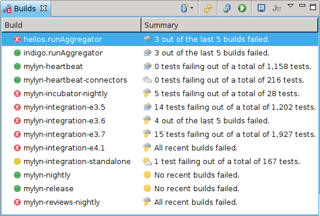

Incubation

Mylyn Builds is in the Incubation Phase.
Committers
- Benjamin Muskalla (Tasktop Technologies)
- Eike Stepper (Independent)
- Steffen Pingel (Tasktop Technologies)
- Torkild U. Resheim (Independent)
The scope of the Mylyn Builds project is integration of continuous integration and build systems and seamless access to software build and assembly technologies. Mylyn users will be able to access continuous integration processes, control build execution and associate build results with tasks and context.

Mylyn Builds is in the Incubation Phase.